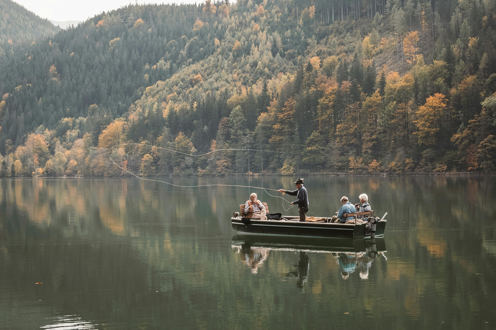

Algonquin Park, the first provincial park in
Ontario, protected from the noise and rush of
civilization, this world-renowned park in Ontario
is a sanctuary for the rugged beauty of the maple,
pine, moose, and wolves. A Provincial Park since 1893, the 7500 square kilometers (3500 square miles) of
Algonquin Park are home to a diverse and unblemished eco-system that can be found nowhere else on earth.
Glaciers that receded ten thousand years ago created the distinctive rock outcroppings and spring-fed
lakes of Algonquin. These mountains of ice have left the park with a rough, stark beauty. This, combined
with its location, 3 hours northeast of Toronto and 2 1/2 hours west of Ottawa makes Algonquin an ideal
attraction for those looking to escape the hustle of the city. This majestic park, minutes away and seen
from our lakeshore, is awe-inspiring and completely peaceful with the incredible beauty of nature. Come
experience the Algonquin grandeur, with all its fresh clean air, deep blue skies, rich green forests and
hundreds of pristine lakes. It is impressive. Algonquin park just steps away from The Couples Resort,
Algonquin's 7,630 square kilometres of forests, lakes, and rivers have assumed an almost incalculable
importance as a living link with a vanishing past. Ontario's Algonquin Park and Area has more than 30
species of mammals, many are nocturnal or mostly subterranean and therefore not encountered. Listed are
most commonly seen mammals, birds and reptilesin the Algonquin Park & Area. Visit Algonquin and hear for
the first and only time in your lives the mournful howl of a wolf? See first-hand — in Algonquin and
nowhere else — a reasonable facsimile of the wilderness that once covered all of Ontario? For more
information visit Algonquin Park Ontario For more photos of Algonquin Park widlife visit photographer
Steve Dunsford Impressions of Algonquin Park
- 17 Hiking trails from casual to ambitious
- Canoeing from paddle to portage
- Wildlife spotting from loon to moose
- Visitor Centre information and activities
- Art Centre and Logging Museum
- Algonquin Art Gallery
The colossal $10 million Visitor Centre and Gallery is just 15 minutes from the Bear Trail Couples
Resort. Constructed to celebrate Algonquin's centennial in 1993, this facility is filled with
world-class exhibits detailing both the natural and human history of the park.
Algonquin Park contains numerous historical and archaeological resources and has inspired more than
40 books, 1,800 scientific papers, a dozen films, a symphony, and the art of Tom Thomson and the
Group of Seven. It also provides many opportunities for visitors to appreciate the Park’s natural
setting while enjoying numerous recreational activities.
Fishing
Algonquin Park & Area offers a variety of angling opportunities (Brook Trout,Lake Trout, Pike, Rainbow
Trout, Bass, Walleye). The nutrient rich lakes and streams provide ideal habitat for sport fish species.
Many lakes in the area are stocked in order to provide enhanced fishing opportunities to anglers. Each
species of sport fish has a regulated open and closed season. Closed season is usually during the
spawning period. For more information on fishing and regulations in Northern Ontario go to:
Ministry of Natural ResourcesMore information on Ontario fishing guided trips, fishing packages and more
Visit Ontario Fishing NetMore information on Hunting & Fishing in Ontario Visit Ontario Federation of
Anglers & Hunters
